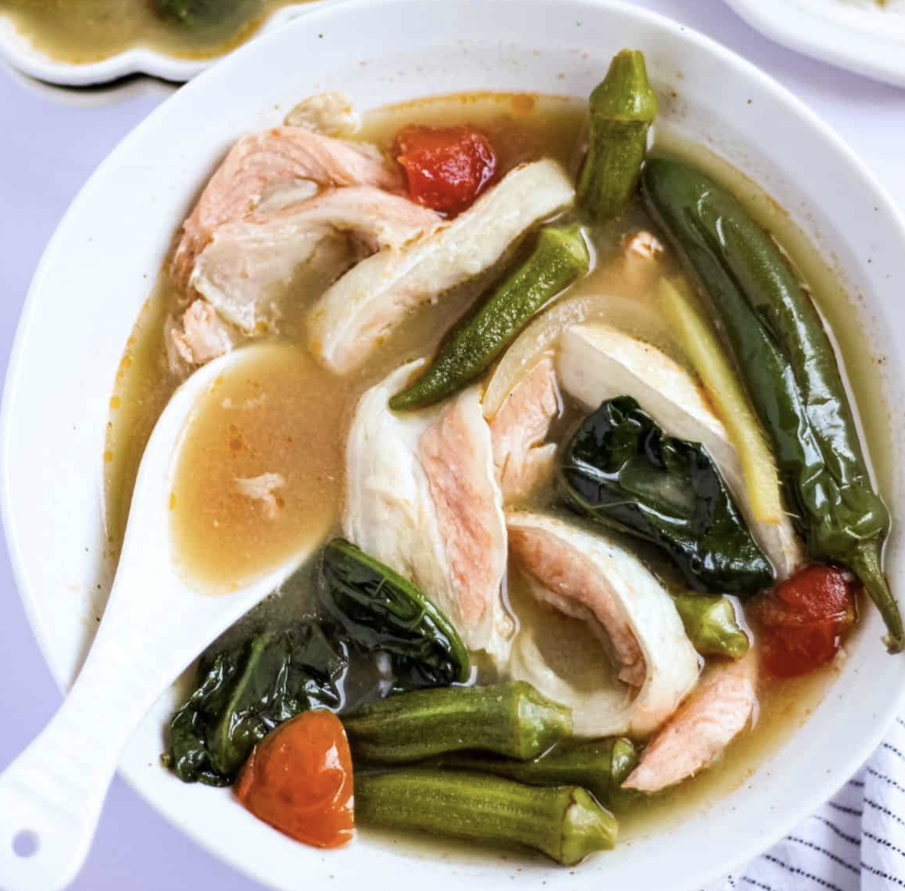

Sinigang na Salmon Belly

Ingredients
- 6 pcs salmon belly
- 2 teaspoon Mama Sita's sinigang powder mix
- a pinch of salt
- 1 whole onion head
- 5 pcs of tomatoes
- water
- a lot of Spinach
Steps
- Put everything together in a pan to boil.
- Boil in low-heat for 30 minutes or until cooked.
- Serve with rice.